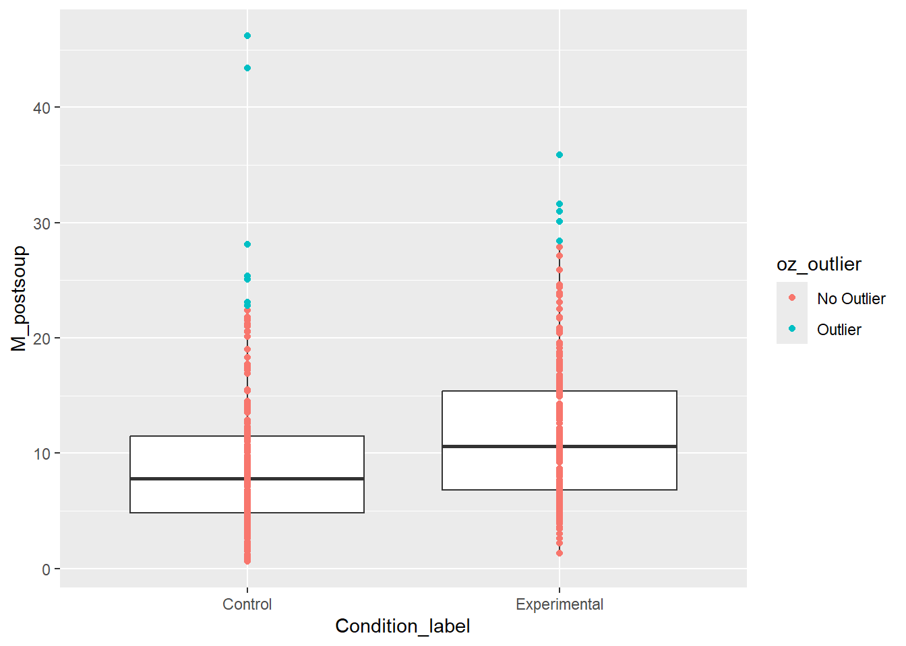
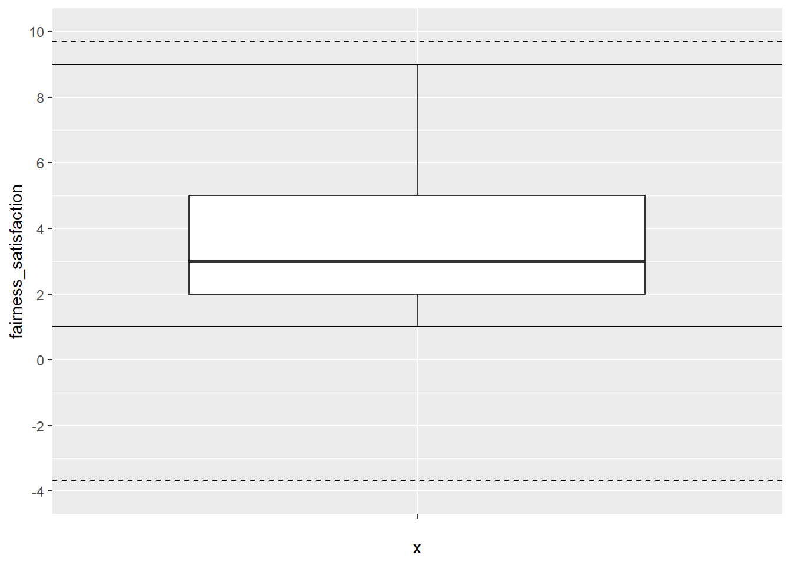

# load the relevant packages
library(performance)
library(tidyverse)
# Read the Dawtry_2015_clean.csv file
dawtry_clean <- read_csv("data/Dawtry_2015_clean.csv")
# Read the Lopez_2023.csv file
lopez_data <- read_csv("data/Lopez_2023.csv")
# recode condition
lopez_clean <- lopez_data %>%
mutate(Condition_label = case_match(Condition,
0 ~ "Control",
1 ~ "Experimental"))11 Missing data, outliers, and checking assumptions
In this chapter…
Chapter Intended Learning Outcomes (ILOs)
By the end of this chapter, you will be able to:
- ILO1.
11.1 Chapter preparation
11.1.1 Organising your files and project for the chapter
For this chapter, we are going to revisit the data sets you worked with in Chapters 8 (Dawtry et al., 2015) and 9 (Lopez et al., 2023). They each presented some useful examples for checking statistical assumptions and the decisions that go into data analysis. We might not use both data sets for each topic we cover, but they will be useful to demonstrate some of the problems and decisions we highlighted in previous chapters, but did not explore solutions.
Before we can get started, you need to organise your files and project for the chapter, so your working directory is in order.
In your folder for research methods and the book
ResearchMethods1_2/Quant_Fundamentals, create a new folder calledChapter_11_screening_data. WithinCChapter_11_screening_data, create two new folders calleddataandfigures.Create an R Project for
Chapter_11_screening_dataas an existing directory for your chapter folder. This should now be your working directory.Create a new R Markdown document and give it a sensible title describing the chapter, such as
11 Missing Data, Outliers, and Assumptions. Delete everything below line 10 so you have a blank file to work with and save the file in yourChapter_11_screening_datafolder.The Dawtry et al. (2015) data wrangling steps were quite long, so please save this clean version of the data to focus on screening data in this chapter: Dawtry_2015_clean.csv. You will also need to save the data from Lopez et al. (2023) if you have not downloaded it yet: Lopez_2023.csv. Right click the link and select “save link as”, or clicking the link will save the files to your Downloads. Make sure that you save the files as “.csv”. Save or copy the files to your
data/folder withinChapter_11_screening_data.
You are now ready to start working on the chapter!
11.1.2 Activity 1 - Read and wrangle the data
As the first activity, try and test yourself by completing the following task list to read and wrangle the two data files. There is nothing extra to do with this version of the Dawtry data and one small step for the Lopez data.
Try this
To read and wrangle the data, complete the following tasks:
-
Load the following packages:
performance tidyverse
Read the data file
data/Dawtry_2015_clean.csvto the object namedawtry_clean.Read the data file
data/Lopez_2023.csvto the object namelopez_data.-
Create a new object called
lopez_cleanbased onlopez_data:- Create a new variable called
Condition_labelby recodingCondition. “0” is the “Control” group and “1” is the “Experimental” group.
- Create a new variable called
Show me the solution
You should have the following in a code chunk:
11.2 Missing data
Checking whether data are missing are relatively straight forward. Missing values in a spreadsheet will be recorded as NA and there are a few ways of identifying them. The much more difficult part of missing data is considering why they are missing in the first place. For example, it might be because:
Your participants accidentally missed a question.
You made a mistake while setting up your questionnaire/experiment and some responses did not save.
Your participants intentionally did not want to answer a question.
Your participants did not turn up to a final testing session.
For the first two reasons, it is not ideal as we are losing data but there is no systematic pattern to why the data is missing. For the latter two reasons, there might be a relationship between a key variable and whether the data are missing. This is where it is particularly important to consider the role of missing data. We are focusing on data skills here rather than the conceptual understanding, but missing data are commonly categorised as:
Missing completely at random.
Missing at random.
Missing not at random.
For this introductory course, we do not have time to investigate strategies to address missing data apart from focusing on complete cases and ignoring missing data, but you might find Jakobsen et al. (2017) useful if you want to explore options like data imputation.
11.2.1 Identifying missing data
Returning to data skills, the simplest way of getting an overview of whether any data are missing is using the summary() function. For this part, we will focus on Dawtry et al. (2015).
PS Household_Income Political_Preference age
Min. : 1 Min. : 20 Min. :1.000 Min. :19.0
1st Qu.: 77 1st Qu.: 25000 1st Qu.:3.000 1st Qu.:28.0
Median :153 Median : 42000 Median :4.000 Median :33.5
Mean :153 Mean : 54732 Mean :4.465 Mean :37.4
3rd Qu.:229 3rd Qu.: 75000 3rd Qu.:6.000 3rd Qu.:46.0
Max. :305 Max. :350000 Max. :9.000 Max. :69.0
NA's :4 NA's :4 NA's :1
gender Population_Inequality_Gini_Index Population_Mean_Income
Min. :1.00 Min. :14.26 Min. : 14205
1st Qu.:1.00 1st Qu.:31.10 1st Qu.: 47250
Median :1.00 Median :35.66 Median : 58650
Mean :1.48 Mean :35.51 Mean : 58605
3rd Qu.:2.00 3rd Qu.:40.73 3rd Qu.: 67875
Max. :2.00 Max. :57.45 Max. :138645
NA's :3
Social_Circle_Inequality_Gini_Index Social_Circle_Mean_Income
Min. : 2.00 Min. : 12000
1st Qu.:19.79 1st Qu.: 36000
Median :25.59 Median : 51060
Mean :26.35 Mean : 54294
3rd Qu.:33.27 3rd Qu.: 66375
Max. :61.36 Max. :148500
fairness_satisfaction redistribution
Min. :1.000 Min. :1.00
1st Qu.:2.000 1st Qu.:3.25
Median :3.000 Median :4.00
Mean :3.539 Mean :3.91
3rd Qu.:5.000 3rd Qu.:4.75
Max. :9.000 Max. :6.00
We get a range of summary statistics for each variable but importantly for our purposes here, the final entry is NA's where relevant. We can see there are 4 missing values for household income, 4 for political preference, 1 for age, and 3 for gender.
Try this
If you explore lopez_clean from Lopez et al. (2023), do we have any missing data to worry about?
Solution
Yes, it looks like there is also a small amount of missing data here. There is 1 for sex, 2 for estimated ounces, and 3 for estimates calories.
ParticipantID Sex Age Ethnicity
Min. :1001 Min. :0.0000 Min. :18.00 Min. :1.000
1st Qu.:1202 1st Qu.:1.0000 1st Qu.:19.00 1st Qu.:3.000
Median :1462 Median :1.0000 Median :20.00 Median :3.000
Mean :1456 Mean :0.8099 Mean :20.47 Mean :3.261
3rd Qu.:1704 3rd Qu.:1.0000 3rd Qu.:21.00 3rd Qu.:4.000
Max. :1928 Max. :3.0000 Max. :54.00 Max. :8.000
NA's :1
OzEstimate CalEstimate M_postsoup F_CaloriesConsumed
Min. : 0.010 Min. : 1.0 Min. : 0.600 Min. : 13.31
1st Qu.: 2.000 1st Qu.: 50.0 1st Qu.: 5.575 1st Qu.: 123.65
Median : 4.000 Median : 90.0 Median : 8.700 Median : 192.97
Mean : 6.252 Mean :124.6 Mean :10.203 Mean : 226.30
3rd Qu.: 8.000 3rd Qu.:160.0 3rd Qu.:13.125 3rd Qu.: 291.11
Max. :100.000 Max. :800.0 Max. :46.200 Max. :1024.72
NA's :2 NA's :3
Condition Condition_label
Min. :0.0000 Length:464
1st Qu.:0.0000 Class :character
Median :0.0000 Mode :character
Mean :0.4698
3rd Qu.:1.0000
Max. :1.0000
11.2.2 Removing missing data
Once we know whether missing data are present, we must consider what to do with them. For this chapter, we are only going to control removing participants, but you could apply a data imputation technique at this point.
For all the modelling techniques we apply in this book, the functions will remove participants who have one or more missing values from any variable involved in the analysis. The functions will give you a warning to highlight when this happens, but it is normally a good idea to remove participants with missing data yourself so you have a note of how many participants you remove.
For dawtry_clean, the drop_na() is the easiest way of removing missing data, either participants with any missing data or by specifying individual variables.
We can compare the number of participants by using the nrow() function to count how many rows are in each object.
# How many rows in the full data?
nrow(dawtry_clean)
# How many rows when we remove missing data in one variable?
nrow(dawtry_income_missing)
# How many rows when we remove any missing value?
nrow(dawtry_all_missing)[1] 305
[1] 301
[1] 294Like most data skills and statistics concepts, the key skill here comes in decision making; documenting and justifying the approach that you take.
11.3 Outliers
The next data screening concept revolves around identifying potential outliers. Like missing data, the difficulty here comes in first deciding what an outlier is and then deciding on what to do with it. Leys et al. (2019) mention one study found 14 definitions and 39 unique ways of identifying outliers, so this is our second key area of decision making. Leys et al. categorise outliers into three types:
Error outliers - a mistake or impossible value.
Interesting outliers - values that looks extreme until you take a moderator into account.
Random outliers - values that are extreme compared to the majority of data points.
Even simpler, we can consider values as legitimate or not legitimate. Error outliers would be not legitimate as they represent a mistake or error, so they would potentially provide misleading results. These are values you can justify removing or correcting as they should not be there in the first place.
Interesting and random outliers would be legitimate as they are not clear mistakes or errors; they are just different to the majority of values in the data. In most cases, it is not a good idea to remove these kind of values as they potentially tell you something interesting, but you might need to approach the data analysis in a different way to ensure the results are robust to extreme values.
11.3.1 Identifying error outliers
Unless you can specifically identify values or participants you know contain errors, the main way to check is by ensuring the values are within known limits.
We can look at dawtry_clean and the key variables we explored in Chapter 8. Fairness and satisfaction was on a 1-9 scale, so we can check the minimum and maximum values and create a plot. For example, we can isolate the variable and apply the summary() function.
fairness_satisfaction
Min. :1.000
1st Qu.:2.000
Median :3.000
Mean :3.539
3rd Qu.:5.000
Max. :9.000 The minimum and maximum values are nice and consistent with what we expect.
For a visual check, we can also plot the minimum and maximum possible values on a boxplot. This is just a check for you, so you do not need to worry so much about the presentation.
dawtry_clean %>%
ggplot(aes(y = fairness_satisfaction, x = "")) + # make x blank
geom_boxplot() +
scale_y_continuous(limits = c(1, 9),
breaks = seq(1, 9, 1)) +
geom_hline(yintercept = c(1, 9), # min and max values
linetype = 2) # create dashed line
Try this
If you explore redistribution from dawtry_clean, the minimum and maximum values are 1-6. Does it look like there are any problematic looking values?
Solution
No, it looks like all values are within the expected 1-6 range.
redistribution
Min. :1.00
1st Qu.:3.25
Median :4.00
Mean :3.91
3rd Qu.:4.75
Max. :6.00 We can also confirm this with a visual check.

If you did identify error outliers to remove, then you could use filter() (Chapter 5) to directly remove values outside your known range, or you could first use case_when() to code observations as outliers or not (Chapter 4), before deciding to filter them out.
11.3.2 Identifying interesting or random outliers
Identifying error outliers relies on manually setting known minimum and maximum values, whereas identifying interesting or random outliers relies on data driven boundaries. For this example, we focus on univariate outliers, where we focus on one variable at a time. When we return to checking assumptions of regression models, you can identify interesting or random outliers through observations with large leverage / Cook’s distance values.
In general, we recommend not removing outliers providing you are confident they are not errors. It is better to focus on modelling your outcome in a more robust way. However, it is also important you know how to identify errors for strategies you will come across in published research.
We focus here on setting boundaries using the median absolute deviation as recommended by Leys et al. (2019). You will see other approaches in the literature, but this method is useful as it’s influenced less by the very outliers it is trying to identify. We will use lopez_clean from Lopez et al. (2023) for this section.
There are two main steps to this process because we have two groups and each group will have different boundaries. If you only have individual variables, then you could just mutate() your data, without the initial group_by() and summarise() step.
First, we group by the condition to get one value per group. We then calculate a few values for the median ounces of soup, 3 times the MAD in line with Leys et al., then calculating the upper and lower bound using these objects.
# create a new object with values per group
mad_bounds <- lopez_clean %>%
group_by(Condition_label) %>%
summarise(oz_median = median(M_postsoup), # median of soup in oz
oz_MAD = 3 * mad(M_postsoup), # 3 times the MAD
lower = oz_median - oz_MAD, # lower bound
upper = oz_median + oz_MAD) # upper bound
mad_bounds| Condition_label | oz_median | oz_MAD | lower | upper |
|---|---|---|---|---|
| Control | 7.8 | 14.67774 | -6.87774 | 22.47774 |
| Experimental | 10.6 | 17.56881 | -6.96881 | 28.16881 |
In this example, the lower bound is lower than 0 as the smallest possible value. The upper bounds are then between 22 and 28 depending on the group.
Second, we must add these values to the other information we have available. We join the data sets using Condition_label. This adds the relevant values to each group. We then use mutate() and case_when() to label values as outliers or not. If they are outside the lower and upper bounds, they are labelled as “outliers”. If they are inside the lower and upper bounds, they are labelled as “no outliers”.
We can use these in one of two ways. First, we can visualise the presence of outliers by adding coloured points. These are checks for you again, so you do not need to worry about the plot formatting.
lopez_mad %>%
ggplot(aes(x = Condition_label, y = M_postsoup)) +
geom_boxplot() +
geom_point(aes(colour = oz_outlier)) # needs to be within aes to set dynamic values
We can see a few values per group flagged as outliers using this criterion. If you did decide to remove outliers, then you could use filter to remove them:
Try this
If you switch to dawtry_clean from Dawtry et al. (2015), apply the MAD procedure to the variable fairness_satisfaction. Does it look like there are any outliers using this criterion? .
Solution
No, none of the values are outside the MAD thresholds. The thresholds are well beyond the minimum and maximum possible values of 1-9 for this variable.
dawtry_mad <- dawtry_clean %>%
mutate(fs_median = median(fairness_satisfaction), # median of fairness/satisfaction
fs_MAD = 3 * mad(fairness_satisfaction), # 3 times the MAD
lower = fs_median - fs_MAD, # lower bound
upper = fs_median + fs_MAD, # upper bound
fs_outlier = case_when(fairness_satisfaction < lower | fairness_satisfaction > upper ~ "Outlier",
fairness_satisfaction >= lower | fairness_satisfaction <= upper ~ "No Outlier"))For this variable and it’s bounded scale, no value is above or below the thresholds. You can see this in the data, or add horizontal lines in a plot since we are only plotting one variable. The dashed lines are the MAD thresholds and the solid lines are the minimum and maximum possible values.
dawtry_mad %>%
ggplot(aes(y = fairness_satisfaction, x = "")) +
geom_boxplot() +
geom_hline(aes(yintercept = lower),
linetype = 2) + # dashed line
geom_hline(yintercept = c(1, 9)) +
geom_hline(aes(yintercept = upper),
linetype = 2) +
scale_y_continuous(limits = c(-4, 10),
breaks = seq(-4, 10, 2))
Remember: identifying outliers is a crucial researcher degree of freedom, so pre-register your choice of outlier detection wherever possible, and document how many outliers you removed. We still recommend favouring a more robust model, but you can make an informed decision now you know how to identify outliers in the data.
11.4 Checking assumptions
The final section here revisits checking assumptions from Chapter 8 and 9. In those chapters, we introduced the concepts and stuck with the output regardless of whether we were happy with the assumptions or not. In this chapter, we will introduce potential solutions.
As a reminder, the assumptions for simple linear regression are:
The outcome is interval/ratio level data.
The predictor variable is interval/ratio or categorical (with two levels at a time).
All values of the outcome variable are independent (i.e., each score should come from a different participant/observation).
The predictors have non-zero variance.
The relationship between the outcome and predictor is linear.
The residuals should be normally distributed.
There should be homoscedasticity.
Assumptions 1-4 are pretty straight forward as they relate to your understanding of the design or a simple check on the data. On the other hand, assumptions 5-7 require diagnostic checks.
For this part, we focus on Lopez et al. (2023) as the assumptions did not look quite right in Chapter 9. As a reminder, we can get a quick diagnostic check by running plot() on the model object:
# Condition as a factor containing 0 and 1
lm_cals_numbers <- lm(formula = F_CaloriesConsumed ~ Condition,
data = lopez_clean)
# Change the panel layout to 2 x 2
par(mfrow = c(2,2))
# plot the diagnostic plots
plot(lm_cals_numbers)
# Condition_label as numbers
lm_cals_ranks <- lm(formula = rank(F_CaloriesConsumed) ~ 1 + Condition,
data = lopez_clean)
summary(lm_cals_ranks)
wilcox.test(formula = F_CaloriesConsumed ~ Condition_label,
data = lopez_clean,
conf.int = TRUE)
Call:
lm(formula = rank(F_CaloriesConsumed) ~ 1 + Condition, data = lopez_clean)
Residuals:
Min 1Q Median 3Q Max
-261.138 -110.361 1.862 111.467 263.967
Coefficients:
Estimate Std. Error t value Pr(>|t|)
(Intercept) 200.03 8.27 24.188 < 2e-16 ***
Condition 69.11 12.06 5.728 1.84e-08 ***
---
Signif. codes: 0 '***' 0.001 '**' 0.01 '*' 0.05 '.' 0.1 ' ' 1
Residual standard error: 129.7 on 462 degrees of freedom
Multiple R-squared: 0.0663, Adjusted R-squared: 0.06428
F-statistic: 32.81 on 1 and 462 DF, p-value: 1.836e-08
Wilcoxon rank sum test with continuity correction
data: F_CaloriesConsumed by Condition_label
W = 18827, p-value = 3.021e-08
alternative hypothesis: true location shift is not equal to 0
95 percent confidence interval:
-82.06643 -39.92418
sample estimates:
difference in location
-59.88637 11.5 Test yourself
To end the chapter, we have some knowledge check questions to test your understanding of the concepts we covered in the chapter. We then have some error mode tasks to see if you can find the solution to some common errors in the concepts we covered in this chapter.
11.5.1 Knowledge check
Question 1.
11.5.2 Error mode
The following questions are designed to introduce you to making and fixing errors. For this topic, we focus on the new types of data visualisation. Remember to keep a note of what kind of error messages you receive and how you fixed them, so you have a bank of solutions when you tackle errors independently.
Create and save a new R Markdown file for these activities. Delete the example code, so your file is blank from line 10.
…
11.6 Words from this Chapter
Below you will find a list of words that were used in this chapter that might be new to you in case it helps to have somewhere to refer back to what they mean. The links in this table take you to the entry for the words in the PsyTeachR Glossary. Note that the Glossary is written by numerous members of the team and as such may use slightly different terminology from that shown in the chapter.
11.7 End of Chapter
That is the final chapter you will complete for Research Methods 1.